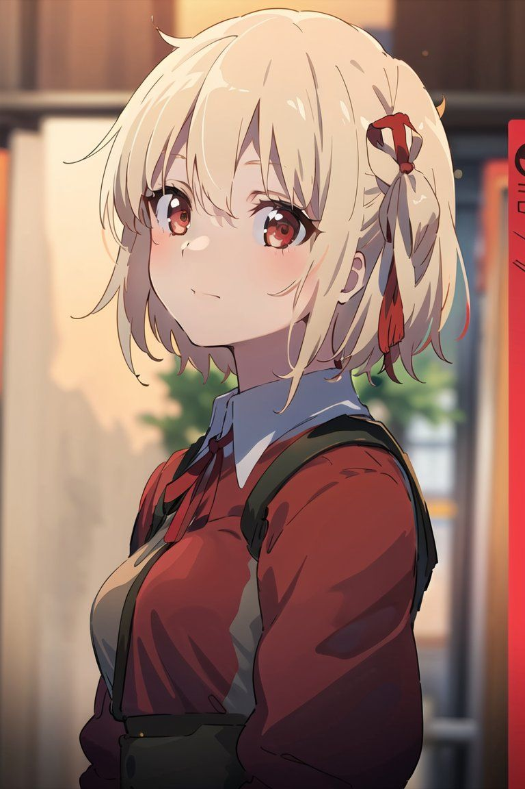

About Me
Kenalan lebih dekat dengan Arjuna.
Ketertarikan saya ada di pertemuan antara teknologi, desain, dan kreativitas. Saya senang mempelajari hal baru lalu menerapkannya dalam bentuk karya yang bisa digunakan.

Technology meets creativity.My Story
Belajar, membangun, berkembang.
Saya adalah pengembang web yang fokus mengembangkan kemampuan frontend dan mengeksplorasi UI/UX. Bagi saya, pengalaman digital yang baik bukan hanya tentang tampilannya, tetapi juga tentang keterbacaan, kemudahan navigasi, dan konsistensi.
Saya menggunakan HTML, CSS, JavaScript, Tailwind CSS, dan teknologi lain untuk membuat maupun mempelajari aplikasi web. Saat ini saya juga mengeksplorasi Next.js, Prisma, dan alur CI/CD.
Di luar teknologi, saya memiliki minat pada konten edukasi visual serta dokumentasi budaya lokal, termasuk musik tradisional Dambus Bangka.
What Matters to Me
Cara saya melihat sebuah proyek.
Berorientasi pada pengguna
Saya berusaha membuat antarmuka yang mudah dipahami dan nyaman digunakan, baik melalui komputer maupun perangkat mobile.
Terus belajar
Saya memandang proyek sebagai ruang eksperimen: mencoba pendekatan, mengevaluasi hasil, lalu memperbaikinya secara bertahap.
Teknologi dan budaya
Saya percaya media digital juga bisa menjadi cara yang menarik untuk mendokumentasikan pengetahuan dan tradisi lokal.